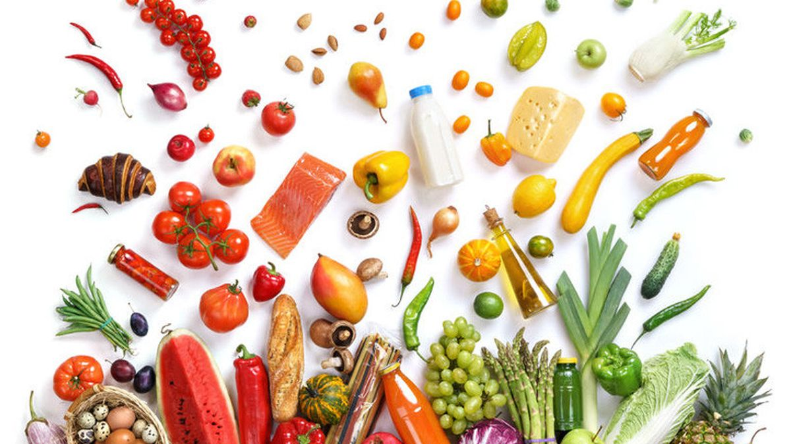

Nutrisi
adalah kandungan zat dalam makanan sehat yang berfungsi untuk membantu pertumbuhan dan perkembangan organ tubuh secara optimal. Nutrisi sendiri sering disebut oleh banyak orang dengan istilah gizi. Cara perolehan nutrisi yaitu melalui pemecahan sari-sari makanan oleh sistem pencernaan. Nutrisi dapat diklasifikasikan ke dalam dua golongan, yaitu mikronutrisi dan makronutrisi.

Macam Macam Contoh Nutrisi
- Karbohidrat
- Protein
- Lemak
- Vitamin
- Mineral dan trace elemen lainnya
- Air